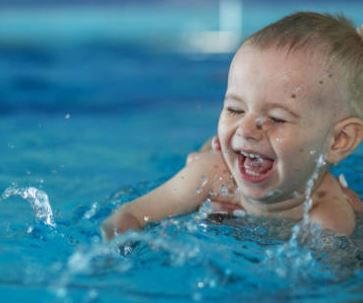
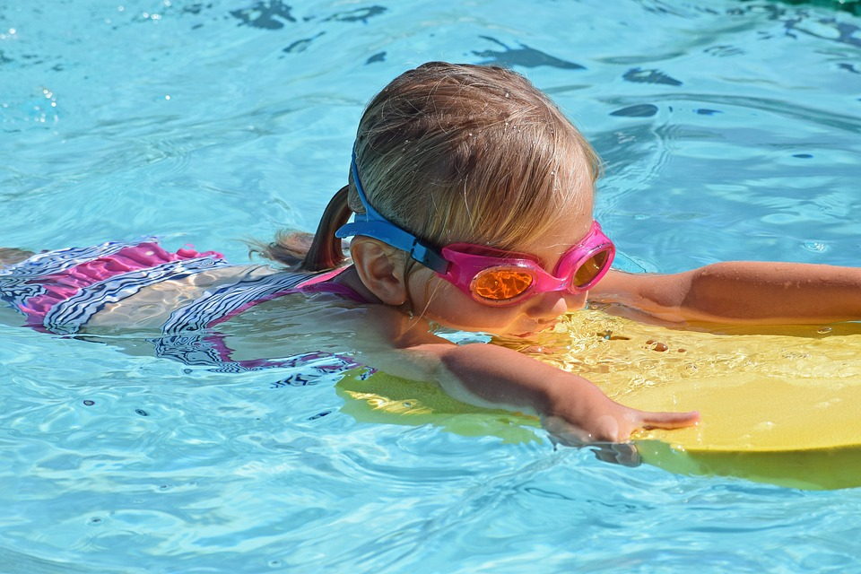
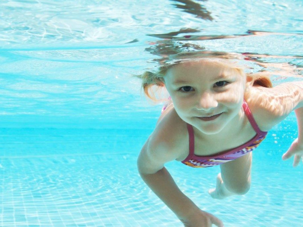
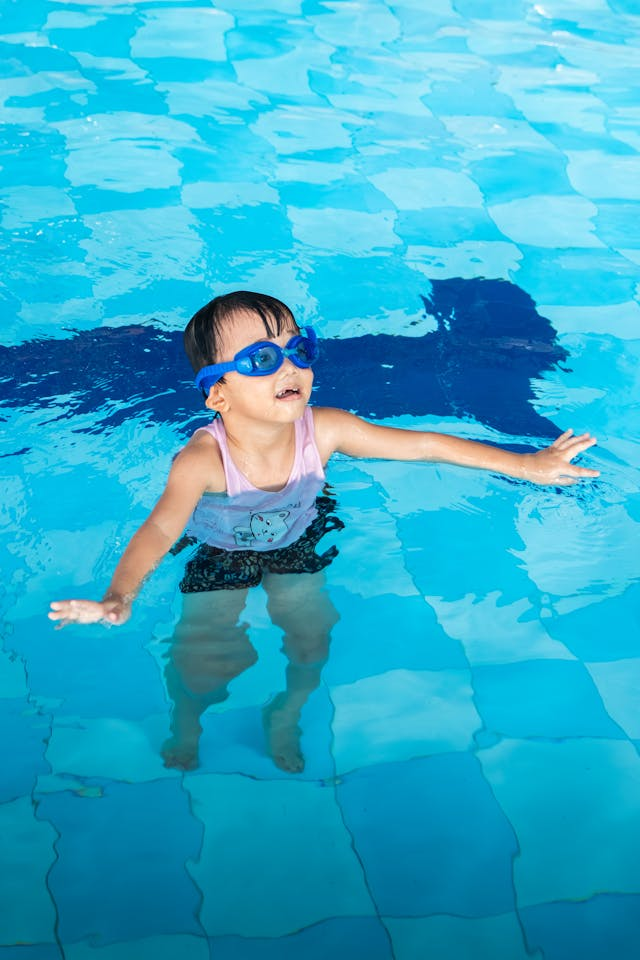
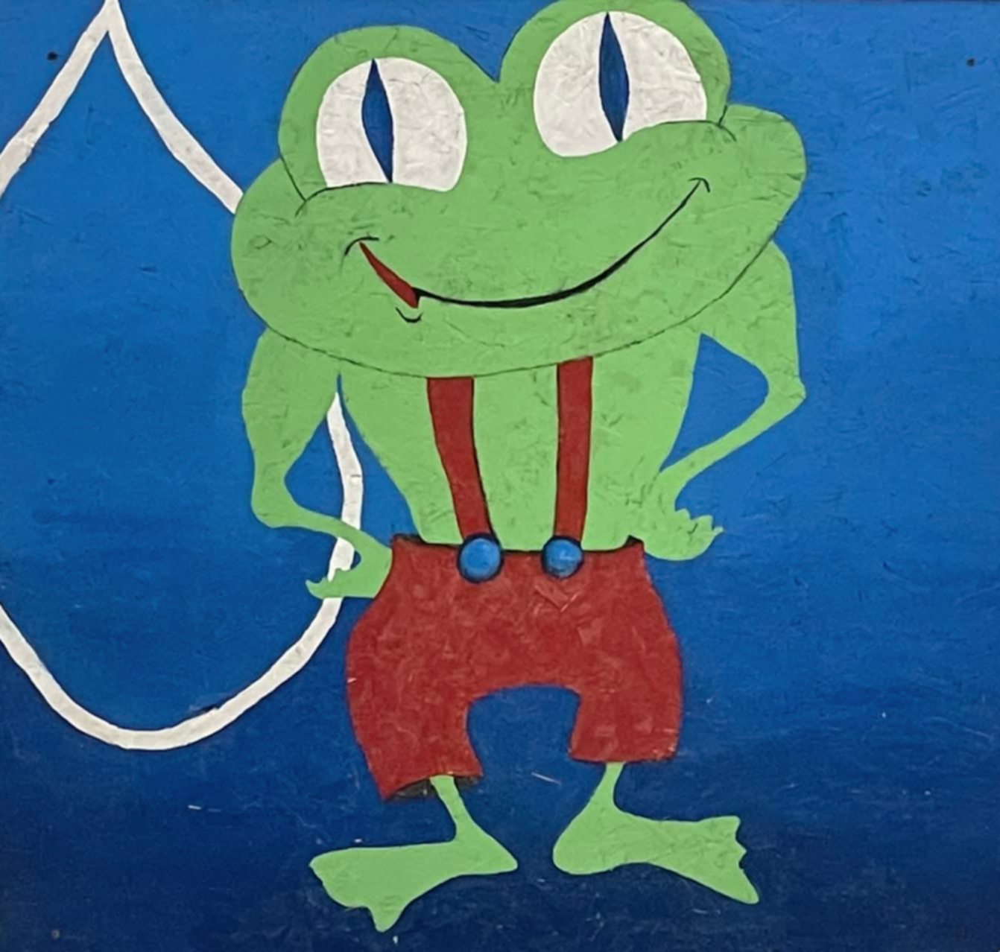
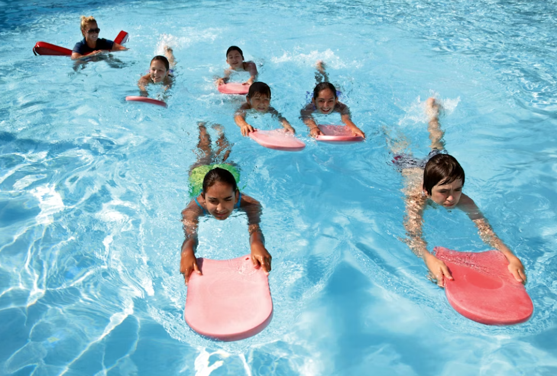
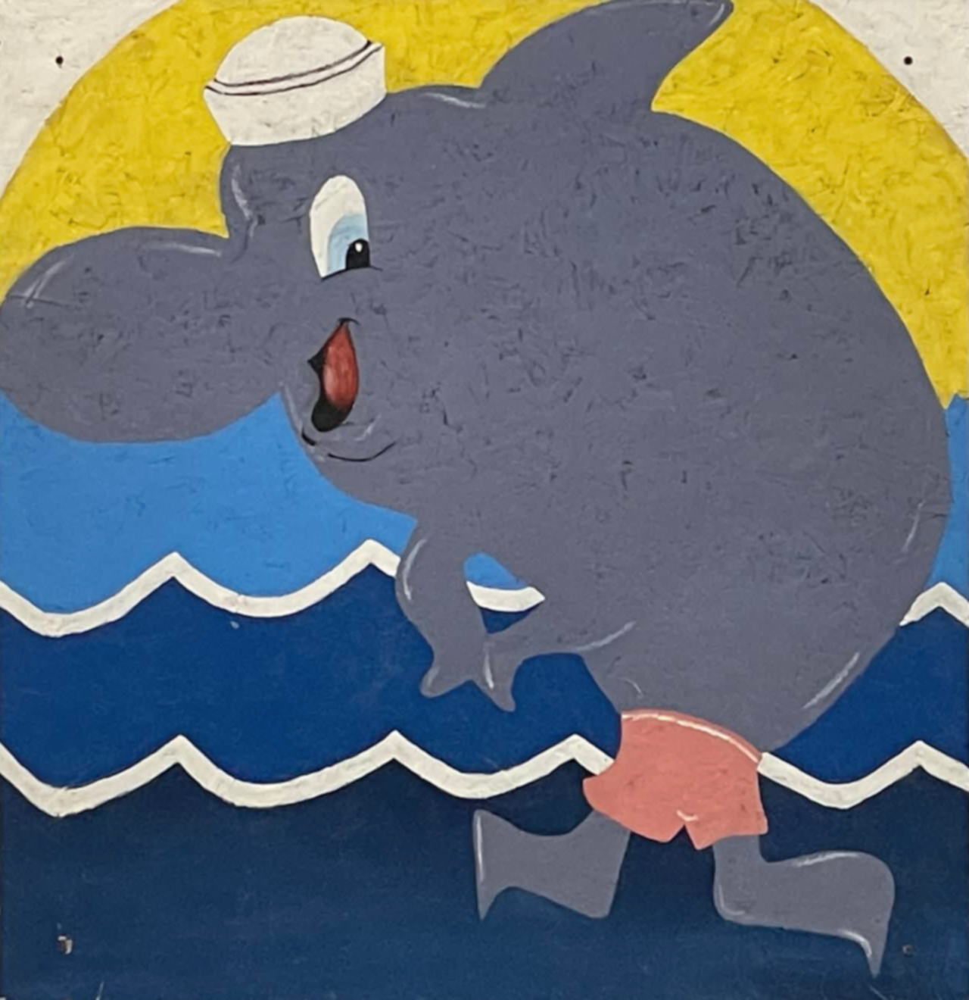
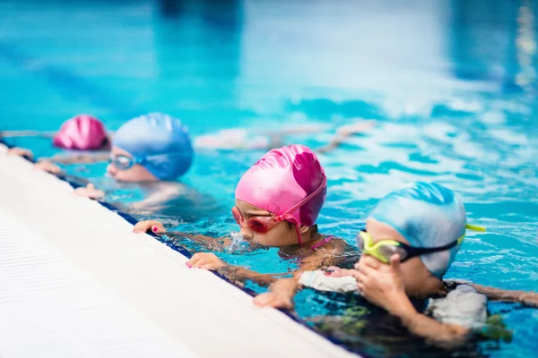

Niveaux préscolaires
De l'acclimatation à l'eau jusqu'à l'autonomie complète
Parent-enfant 1
Objectifs
- S'habituer à l'environnement aquatique
- Immersion (tête sous l'eau)
- Développer la confiance dans l'eau
Le moniteur s'adresse principalement à l'accompagnateur (parent) pour lui montrer le "comment faire" afin que l'enfant ait une meilleure aisance dans l'eau.

Parent-enfant 2
Objectifs
- Prendre de l'autonomie - nage avec ballon dorsal
- Mouvements de propulsion (déplacements)
- Développer l'endurance cardiorespiratoire
Le moniteur s'adresse à l'enfant et à l'accompagnateur. L'enfant se déplace avec différents objets flottants et avec le moins d'aide possible de l'accompagnateur.

Parent-enfant 3 NOUVEAU!
Objectifs
- Augmenter l'autonomie - les parents s'éloignent un peu
- Introduction sans flotteur - fusée, sauts, étoiles
Évaluations du moniteur

Exercices pratiqués:
- J'entre et je sors par le bord de la piscine
- Je mets mon visage sous l'eau
- Je m'accroche au mur lors des consignes
- Je me déplace seul avec mon flotteur (un largeur)
- Je saute du bord et je retournes au mur (avec flotteur)
- Je fais une mini-fusée sur le ventre (sans flotteur)
- Je fais l'étoile sur le dos (3 secondes, peu de soutien)
Bientôt sans parents (BSP) NOUVELLE STRUCTURE!
Structure du cours
- Autonomie: 20 min sans parent dans l'eau
- Apprentissage: 25 min avec parent, nage sans flotteur
Important: À partir de cette étape, le moniteur s'adressera principalement à l'enfant. L'accompagnateur devient un observateur de la sécurité et se retirera progressivement de l'eau.
Évaluations du moniteur

Sans flotteur:
- Je fais l'étoile sur le dos (3 secondes)
- Je fais une fusée sur le ventre
- Je saute debout du bord et je refais surface
Avec flotteur:
- Je me déplace avec mon visage dans l'eau
- J'écoute les consignes
- Je suis seul avec mon moniteur (20 minutes)
Grenouille
Objectifs
- Sans accompagnateur
- Nager seul sur 6 mètres (et plus)
Note importante: À compter du cours Grenouille, les cours sont sans accompagnateur. L'enfant sera confronté à ses craintes et poursuivra sa quête de confiance et d'autonomie.
Évaluations du moniteur

Exercices pratiqués (idéalement tête dans l'eau, seul):
- Je me déplace seul sur le ventre (6 mètres)
- Je fais la fusée sur le ventre
- Je fais la fusée sur le dos (avec soutien)
- Je saute et je reviens au bord seul
- Je fais l'étoile sur le ventre
- Je fais l'étoile sur le dos (5 secondes)
- Je me déplace seul sur le dos (4 mètres)
Blanc
Objectifs - venir
- Apprentissage à venir
- Apprentissage à venir
- Apprentissageà venir
Les enfants possèdent à venir

Dauphin
Objectifs
- Augmenter l'endurance: nager seul sur 15 mètres
Évaluations du moniteur

Exercices pratiqués:
- Je nage sur le ventre, tête sous l'eau (10 mètres) *Remplace faire des bulles tête sous l'eau
- Je nage sur le dos (10 mètres)
- Je nage sur place, la tête hors de l'eau (10 secondes)
- Je saute debout du bord et je nage 6 mètres (enchaîné) *Remplace sauter et revenir au bord seul
- Je fais la fusée sur le ventre avec la tête sous l'eau
- Je fais la fusée sur le dos
- Je me déplace sur une distance de 15 mètres (endurance)
Apprentissage et perfectionnement des styles
Pour les enfants de 6 à 11 ans
Jaune - Orange - Rouge
Objectifs - Apprentissage des styles
- Apprentissage du crawl
- Apprentissage du dos crawlé
- Début de l'apprentissage de la brasse
Les enfants possèdent une meilleure connaissance de leurs mouvements et sont prêts à apprendre les styles de nage techniques.

Bronze - Argent - Or
Objectifs - Perfectionnement
- Augmenter l'endurance
- Correction des styles de nage
- Apprentissage des départs et virages
- Autres styles de nage avancés
Programme de perfectionnement pour les jeunes nageurs qui souhaitent améliorer leur technique et leur efficacité dans l'eau.

📋 Informations pratiques - Cours enfants
Session: 8 semaines
Durée: 8 cours (durée selon le niveau)
Ratio: Selon le cours et le niveau
Rabais disponibles:
- 3e personne d'une même famille
- Résidents de Rawdon (avec preuve)
Cours pour adultes
Aquaforme, natation et conditionnement aquatique
CLAUSE DE MISE EN LIGNE DES COURS
Les cours ne sont pas nécessairement mis en ligne dès l'obtention d'un nombre minimum d'inscriptions. Le processus d'inscription et de mise en ligne des cours dépend de plusieurs facteurs, notamment la disponibilité de l'établissement, la disponibilité des instructeurs qualifiés et les exigences du programme. Natation en Forme se réserve le droit d'annuler ou de reporter un cours si le nombre minimal de participants n'est pas atteint ou si les conditions nécessaires à la tenue du cours ne sont pas réunies. Dans un tel cas, les participants inscrits seront informés dans les meilleurs délais et pourront obtenir un remboursement complet ou être transférés vers une autre session disponible.
Aquaforme
Objectifs
L'Aquaforme a pour objectif d'améliorer et de maintenir la forme physique par des exercices aquatiques.
Structure du cours
- Période d'échauffement
- Partie principale cardio-respiratoire
- Exercices musculaires spécifiques
- Retour au calme avec étirements
Allez-y à votre rythme! Si vous débutez, prenez un temps de repos durant le cours. Si vous êtes en forme, augmentez la grandeur et la vitesse des mouvements.
Aquamusique
Le format est le même que celui de l'Aquaforme, mais le rythme de la musique est imposé pour certaines parties du cours.
Aquamaman
Spécificités
- La partie exercices musculaires est allongée
- Concentration sur les muscles de la région pelvienne
- Intensité du travail diminuée
À partir de la 20e semaine de grossesse. Cours adapté pour les futures mamans, idéal pour le premier accouchement.
Maman + Bébé + Aquaforme
Objectifs
- Améliorer ou garder la forme pour la mère
- Acclimater l'enfant à l'eau
Durant les exercices de la mère, l'enfant est installé dans un bateau en forme de poisson spécifique à cette pratique.
Natation en longueur
Périodes de natation libre pour les adultes qui souhaitent pratiquer la nage en longueur.
Consultez la section Horaires pour connaître les plages horaires disponibles.
Aquaphobie
Objectifs
- Apprivoiser l'environnement aquatique
- Pratiquer la flottabilité
- Y associer la propulsion
- Apprendre une première nage
La peur de l'eau nécessite un apprivoisement progressif. Souvent, la participation à un cours d'Aquaforme aide à diminuer la crainte de l'eau avant de commencer ce cours.
Apprendre à nager
Objectif
Apprentissage d'un style de nage qui facilitera la pratique de la natation.
Pour adultes qui n'ont jamais appris à nager ou qui souhaitent développer une technique de base.
Perfectionnement
Objectif
Ce cours offre la possibilité de parfaire les styles de nage et d'améliorer la technique.
📋 Informations pratiques - Cours adultes
Sessions annuelles: 5 sessions par année
Durée: 8 cours de 55 minutes chacun
Ratio: 15 à 20 participants selon le plan d'eau
Rabais disponibles:
- Personnes de 60 ans et plus
- 3e personne d'une même famille
- Résidents de Rawdon (avec preuve)
Forfait annuel disponible (date limite: 30 septembre)
Informations importantes
Politique de remboursement
La politique de remboursement respecte la Loi sur la protection du consommateur en ce qui a trait aux services à exécution successive.
Politique de reprise
La politique de reprise de cours permet de pallier aux imprévus.
Antécédents médicaux
Les antécédents médicaux doivent être connus par l'intervenant. Un formulaire est à remplir si nécessaire et à présenter au premier cours. La confidentialité sera préservée.
Crédit d'impôt (enfants)
Pour les enfants de 16 ans et moins, notre programme est admissible au crédit d'impôt fédéral pour activité physique. Demandez un reçu avec la date de naissance de votre enfant.
Prêt à vous inscrire?
Découvrez tous nos horaires et inscrivez-vous en ligne dès maintenant